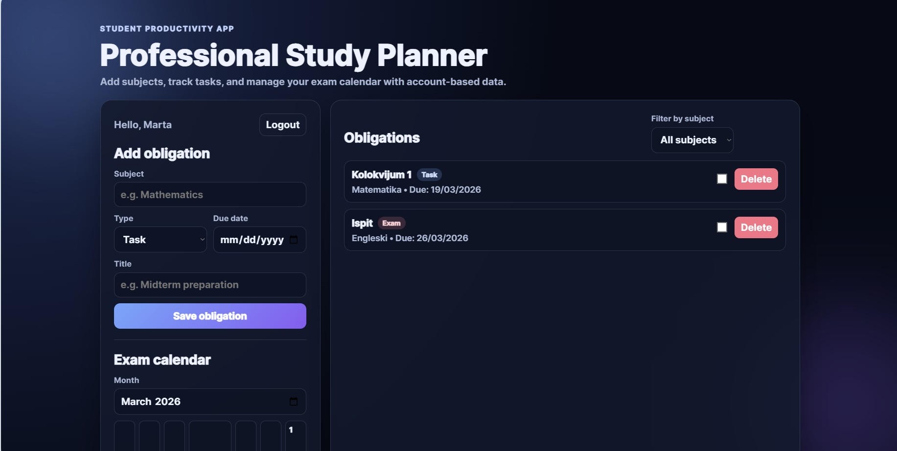
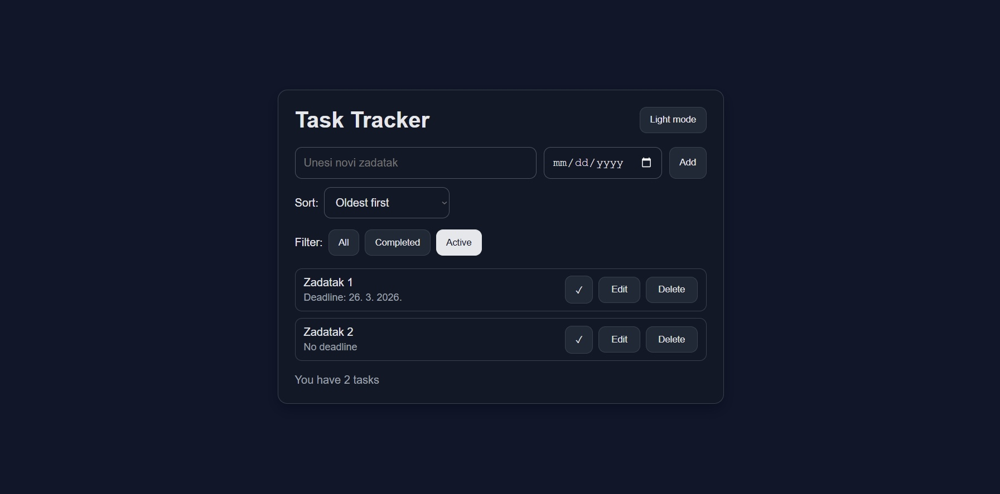

Software Engineering Student | FTN Novi Sad
Software engineering student with experience in C, C++, JavaScript, and Node.js. Interested in web development and backend development. Currently looking for a software engineering internship where I can apply my knowledge and gain industry experience.

What it does: A full-stack productivity app for organizing subjects, exam dates, and obligations in one place, with a clear student-focused workflow.
Technologies: HTML, CSS, JavaScript, Node.js, Express, SQL, authentication modules.
What I learned: Designing a complete CRUD flow, structuring backend routes, and connecting a clean frontend with persistent data.

What it does: A lightweight task manager for daily planning with sorting, filtering by status, and deadline-aware tracking.
Technologies: HTML, CSS, JavaScript, Local Storage.
What I learned: Building reusable UI patterns, handling task state transitions, and improving UX in a responsive layout.